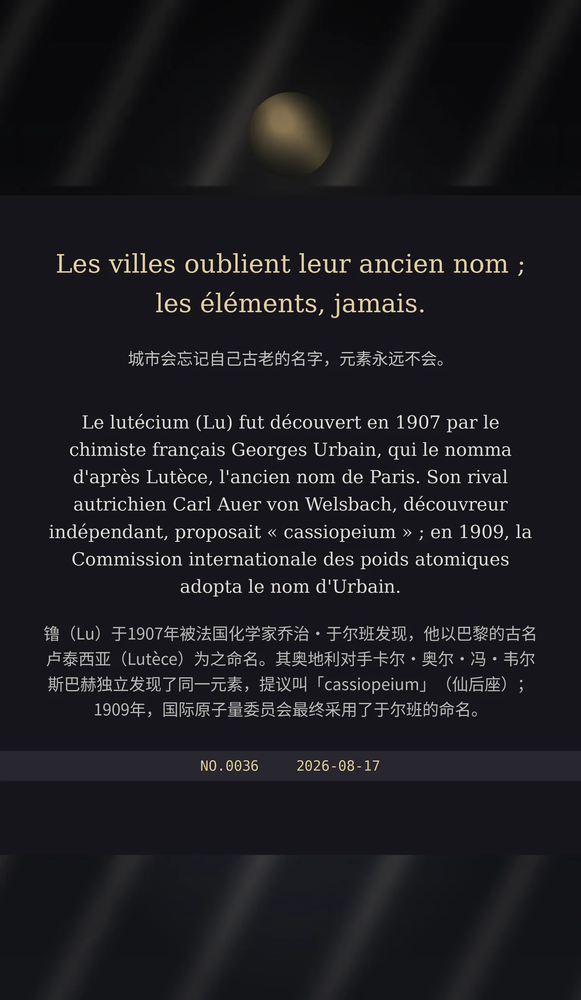

Les villes oublient leur ancien nom ; les éléments, jamais.（中文：城市会忘记自己古老的名字，元素永远不会。）
Le lutécium (Lu) fut découvert en 1907 par le chimiste français Georges Urbain, qui le nomma d'après Lutèce, l'ancien nom de Paris. Son rival autrichien Carl Auer von Welsbach, découvreur indépendant, proposait « cassiopeium » ; en 1909, la Commission internationale des poids atomiques adopta le nom d'Urbain.（中文：镥（Lu）于1907年被法国化学家乔治·于尔班发现，他以巴黎的古名卢泰西亚（Lutèce）为之命名。其奥地利对手卡尔·奥尔·冯·韦尔斯巴赫独立发现了同一元素，提议叫「cassiopeium」（仙后座）；1909年，国际原子量委员会最终采用了于尔班的命名。）